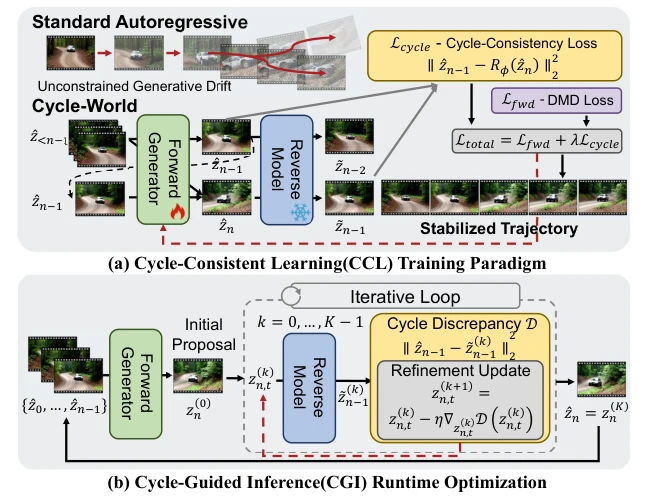
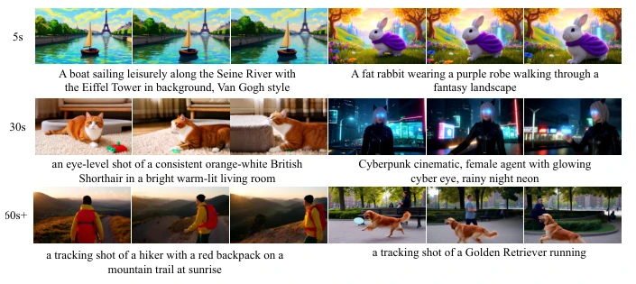
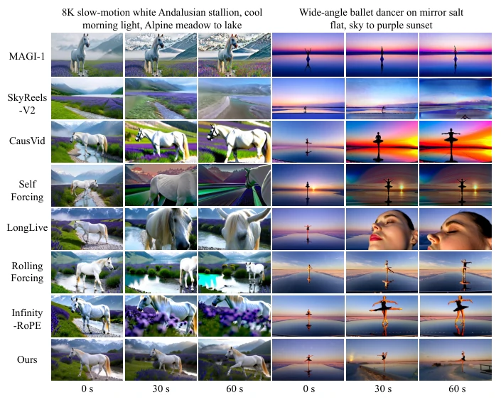
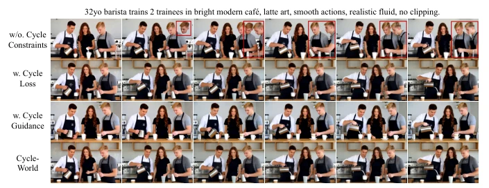

Cycle-World attempts to treat the "drift disease" of autoregressive video generation using "time reversibility". This approach is intriguing, given that the physical world is fundamentally reversible; however, forcibly incorporating a backward prediction model necessitates an additional calculation pass for both training and inference, implying a substantial computational cost. Although the paper claims SOTA quality for 60-second videos, will gradient optimization iterations during actual inference slow down generation speed? Furthermore, relying on a pre-trained backward model poses a risk: if the backward model itself is inaccurate, the forward generation will also fail. In summary, while the theory is elegant, its engineering feasibility depends on VRAM and speed. One must not sacrifice real-time performance for stability, as embodied AI requires real-time response rather than offline refinement.
Current causal autoregressive video models accumulate errors over time during long video generation, resulting in structural hallucinations and visual collapse. Although existing works like Self-Forcing [23] and LongLive [51] attempt to mitigate the training-inference mismatch, they remain confined to unidirectional forward generation and lack temporal cycle consistency constraints. This causes generated states to be unable to logically backtrack to the past, violating physical conservation laws and producing irreversible artifacts such as objects vanishing or clipping through geometry. Existing methods cannot fundamentally constrain this structural drift; there is an urgent need for a new paradigm that guarantees physical consistency during both training and inference stages, otherwise, long video generation will never attain physical realism.
The overall framework comprises two stages: training and inference. The training stage introduces Cycle-Consistent Learning (CCL), incorporating a backward prediction model R_phi jointly optimized with the forward generator G_theta. The core lies in designing an implicit latent space cycle consistency loss L_cycle, which enforces reversibility of the forward generation sequence on the latent manifold, thereby avoiding computational overhead associated with pixel-domain decoding flips. The inference stage proposes Cycle-Guided Inference (CGI), freezing the backward model as a runtime corrector. During the diffusion denoising process, the cycle difference D is calculated, and gradient descent is utilized to iteratively optimize the current latent state, actively pruning errors prior to submission to the historical context. The theoretical section proves the Cycle-Bounded Drift theorem, demonstrating that minimizing backward reconstruction error strictly constrains forward generation drift, offering mathematical guarantees for long-sequence stability.

Fig. 2: Overview of Cycle-World. We mitigate generative drift in autoregressive video synthesis by enforcing temporal reversibility. (a) Training (CCL): The forward generator Gθ and reverse model Rϕ are jointly optimized. A latent cycle-consistency loss (Lcycle) explicitly penalizes physically irreversible trajectories. (b) Inference (CGI): The frozen Rϕ acts as a runtime corrector. By evaluating cycle discrepancy (D), it per- forms iterative gradient-based latent refinement to actively prune accumulated errors before they enter the historical context.
Evaluation was conducted on the VBench benchmark for 5-second and 60-second video generation. Comparison baselines include LTX-Video, Wan2.1, LongLive, Self-Forcing, etc. Metrics encompass overall quality, semantic consistency, physical commonsense (PC), and physical alignment (PACE). Results indicate that Cycle-World significantly outperforms baselines in 60-second long video generation, achieving the highest overall quality score and demonstrating marked improvements in physical consistency metrics. Ablation studies reveal that CCL training loss primarily enhances physical consistency, while CGI inference optimization primarily boosts visual quality, with the combination yielding optimal results. Qualitative comparison figures demonstrate that baseline models are susceptible to subject loss or deformation in long sequences, whereas Cycle-World maintains identity and background consistency, validating the effectiveness of cycle consistency for long-range dependencies.

Fig. 1: High-fidelity, long-horizon video generation with Cycle-World. By effectively bottlenecking generative drift via temporal reversibility, our framework strictly suppresses structural hallucinations inherent in forward-only models. Cycle- World maintains state-of-the-art visual quality, strict physical conservation, and tem- porally consistent object states over extended generation horizons.

Fig. 3: Qualitative comparison of long video generation. We compare our proposed method against several baseline models. The figure displays sampled frames at 0, 30, and 60 seconds for two distinct scenes. While the baseline methods struggle with subject loss, severe structural distortion, or identity shifts over the extended timeframe, our method successfully preserves temporal consistency, visual quality, and subject identity throughout the entire 60-second duration.

Fig. 4: Qualitative ablation study of the proposed Cycle-World components. We compare the visual quality and temporal consistency of different model variants. While the training cycle loss (Lcycle) establishes a robust parametric foundation for structural stability, and the runtime corrector acts as an active safeguard against tem- poral artifacts, their combination achieves a powerful dual-phase synergy. The full Cycle-World model effectively prevents trajectory drift and background degradation, yielding superior results in long video generation.